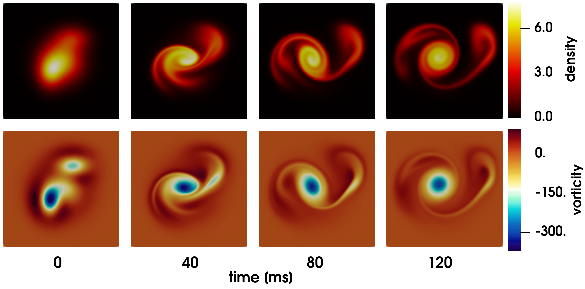

选取理由
回看推荐，非当日新增。它直接展示聚变相关非线性PDE上的多GPU PINN，并诚实报告与成熟求解器的成本差距。今天值得读的是有限元式局部网络、物理变量分离和能量自然梯度如何协同，而不是把弱扩展能力误写成求解加速或实时控制。
研究背景
由原简报的核心问题、选取理由和相关性整理，不替代原文背景综述。
PINN能直接用方程残差训练，但高阶自动微分、病态优化和全域网络容量使复杂湍流计算很快遇到显存及收敛瓶颈。传统求解器已经利用局部网格与成熟并行算法，神经方法若要面对更大物理域，需要同时解决子域拼接、变量耦合、隐式时间推进和分布式优化。
从本日报的选取理由看，回看推荐，非当日新增。它直接展示聚变相关非线性PDE上的多GPU PINN，并诚实报告与成熟求解器的成本差距。今天值得读的是有限元式局部网络、物理变量分离和能量自然梯度如何协同，而不是把弱扩展能力误写成求解加速或实时控制。
核心问题
如何让PINN在多个节点和GPU上处理非线性多物理变量演化，并维持元素边界处解及其导数平滑。本文考察Hasegawa–Wakatani和静电约化MHD模型的数值求解与弱扩展，不是学习真实装置破裂标签、离线训练一次后任意在线推理的代理模型。
对当前主题的关键意义在于：原始应用领域：磁约束聚变相关二维Hasegawa–Wakatani与静电约化MHD数值求解。可迁移模块或训练目标：局部网络与连续权函数拼接、分变量残差优化、物理预条件。对应在研问题：为聚变物理一致表征和离线合成数据提供方法参考，不直接解决P3预警。预期计算和显存影响：分布式缓解单GPU容量限制，ENGD每步反复优化且总成本高，不能预期在线省显存。主要失效条件或数据风险：边界条件误差、精度退化和仿真到实验域差距，弱扩展不保证收敛时间缩短。最小验证实验：先做二维Poisson双子域拼接，对照单网络与传统离散求解，测解误差、二阶导连续性、总墙钟和峰值显存。
方法与关键创新

原论文图4，二维Hasegawa–Wakatani双blob演化。论文动画入口仍为发表后提供占位，本轮没有确认可访问动画。
FEM-NN将空间分成三角元素，每个网格节点和物理变量分别有局部神经网络，利用专门权函数拼接并保持导数连续。每个时间步以Crank–Nicolson隐式离散，再用能量自然梯度ENGD优化残差，上一时间步作为初值。并行先按物理变量分GPU组，再把各节点网络分给GPU，保留邻接通信和全局隐式约束。
阅读时需要把方法设计与主要结果一起看：表3弱扩展把节点数从4增到42，三变量对应GPU数随之增加，参数从124812到1310526，每epoch耗时约4.8到5.6秒，通信约0.010到0.017秒。它测的是随问题规模增长的每epoch弱扩展，未展示固定问题的严格强扩展或完整收敛时间。39GPU的Hasegawa–Wakatani案例每步约5分钟，对照JOREK每步1.15秒，墙钟约慢260倍，原文估计节点时成本约差三个数量级。约化MHD到达外壁后精度下降并出现涡量噪声。
实验结果
表3弱扩展把节点数从4增到42，三变量对应GPU数随之增加，参数从124812到1310526，每epoch耗时约4.8到5.6秒，通信约0.010到0.017秒。它测的是随问题规模增长的每epoch弱扩展，未展示固定问题的严格强扩展或完整收敛时间。39GPU的Hasegawa–Wakatani案例每步约5分钟，对照JOREK每步1.15秒，墙钟约慢260倍，原文估计节点时成本约差三个数量级。约化MHD到达外壁后精度下降并出现涡量噪声。
局限性
二维、简化静电流体模型，尚未扩展三维全MHD或动力学装置。不同硬件节点时不能当成严格统一成本比较，作者也要求后续控制精度、分辨率和硬件的完整收敛比较。每节点每变量绑定GPU，当前没有严格强扩展，ENGD自动微分仍耗内存。论文引用的官方fuse-pinn仓库本轮HTTP404，动画引用写Available-upon-publication，不能称代码及动画已公开。未确认正式venue，未独立复现。
总结
这是并行组织与数值能力的概念验证。可扩展到更多GPU并不表示相对传统求解器更省时、更省资源。
研究相关性与启发
原始应用领域：磁约束聚变相关二维Hasegawa–Wakatani与静电约化MHD数值求解。可迁移模块或训练目标：局部网络与连续权函数拼接、分变量残差优化、物理预条件。对应在研问题：为聚变物理一致表征和离线合成数据提供方法参考，不直接解决P3预警。预期计算和显存影响：分布式缓解单GPU容量限制，ENGD每步反复优化且总成本高，不能预期在线省显存。主要失效条件或数据风险：边界条件误差、精度退化和仿真到实验域差距，弱扩展不保证收敛时间缩短。最小验证实验：先做二维Poisson双子域拼接，对照单网络与传统离散求解，测解误差、二阶导连续性、总墙钟和峰值显存。